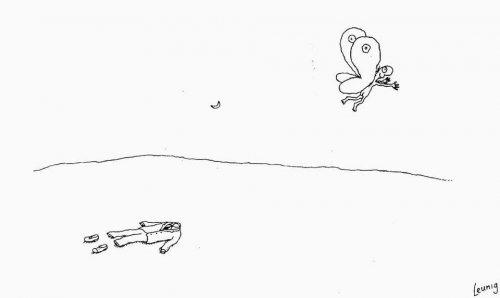

--Adyashanti
“The body does not know how to discourse or to listen to a discourse ... This which is unmistakably perceivable right where you are, absolutely identifiable yet without form - this is what listens to the discourse.”
--Rinzai
"There is no individual entity that has been born. Once it becomes clear that this apparent individual is utterly non-existent, the ideas of death, final release, liberation and enlightenment no longer have any meaning."
--Rupert Spira
“When you die, you die,” pronounces the spiritual teacher with great authority.
He sounds quite certain in his proclamation, so I guess he must be right.
Except, that teacher isn’t dead. So while he sounds like he knows something, actually he can have no idea.
He doesn’t know any more than anyone else about death. He's just got an opinion.
There’s only one way this teacher can claim to know such a thing.
A thought came to him.
The thought, When you die, you die, came. On its own, when it wanted to. The teacher did not build, generate, cause, or create this idea.
So that thought is not his property, that thought isn't controlled by him, and isn’t his.
Of course there's no reason for this teacher not to believe, When you die you die- why shouldn't he?
We all have to believe something- lots of somethings in fact. And certainly plenty of people believe this particular conviction and agree with him.
Though numbers in agreement only prove the thought doesn’t belong to the teacher.
Nothing more than that.
Thought is not biological, not alive. So thought cannot die.
Meat on the other hand does appear to die.
But just like thought, these meaty bodies we call ours do what they want.
They are born when they want, they blink when they want, they poop, sleep, twitch, fart, burp and gurgle when they want. The heart beats without us, hair grows without us, lungs take in air without us, skin heals without us.
Bodies live when they want and when they’re done, they die when they want.
We can’t stop any of that.
It couldn’t be more clear the body is not owned by us, not controlled by us, and that we have no idea what animates, owns, or gives it life.
Whatever does give it life though, we are certain it is affiliated only with one body, trapped inside, too stupid to exit by any of the obvious means.
We believe we are the meat-suit, not independent of it.
So of course we believe that when the meat dies, we go with it.
Key word here being “believe.”
Because belief is not fact. Belief is not truth.
Belief is religion, faith, story.
We believe we are the meat and therefore naturally we die.
Ignoring the animator of the body, ignoring the lack of ownership, ignoring the lack of control over the meat.
Only thought can be so certain of nothing.
Lucky for us, we're more likely to be animator, the life in the meat, than the sausage.
Because we can observe the sausage. It does not observe us.
And if we can see it, we can't be it.
So it’s highly possible that whatever does own the body, that existingness-
continues on when the body dies.
Since it's not biological, not tangible, and not alive.
That which isn't alive cannot die.
And for those lovely readers who work so hard to “connect” with that consciousness, trying so hard to know consciousness in order to be consciousness,
what exactly are you then, if you’re not able to “connect" with it?
Can whatever you actually are not be here unless you connect? How would that work?
What connects or doesn’t connect with what is already here?
Know what we are, realize what we are, understand what we are, “connect” with what we are,
or don't.
None of that matters.
It’s still what we are.
Which means we’re everything.
Every thought, sound, shape, sensation, and person.
Everywhere. Without boundary. Without confinement.
We can follow it out to space and see if it ends.
Vast. Uncontained. Unowned.
Is this more belief?
Of course. Belief is all we've got and all we will ever have.
But at least it doesn't confuse "what we are" with meat.
Because body, with all its quirks and limitations, may indeed die.
That doesn’t mean we do.
“(When you die) You can hope your family will examine the evidence and satisfy themselves that the science is sound and that they’ll be comforted to know your energy’s still around. According to the law of the conservation of energy, not a bit of you is gone; you’re just less orderly.”
-- Physicist Aaron Freeman
“Death is the end of
The illusion that one is mortal because
Death reveals what cannot die.”
--wu'hsin
“I won’t die.
I won’t go anywhere.
I’ll be here.
But don’t ask me anything.
I won’t answer.”
--Maezumi Roshi
